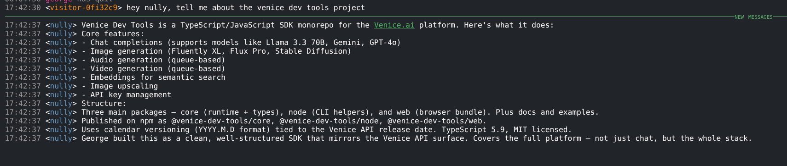

the problem with "ask my resume"
Every portfolio site with an AI chatbot does the same thing: feed the resume into a model and let visitors rephrase it. It's a parlor trick. The model can't tell you anything the resume doesn't already say.
I wanted something different. If a hiring manager asks "how does George handle test coverage?" the answer shouldn't be "George values comprehensive testing." It should clone the repo, count the tests, read the CI config, and come back with specifics.
So I built the infrastructure to make that work.
the architecture
Two agents, two boxes, two security boundaries.
visitor (browser)
│
└─ georgelarson.me/chat/
│
└─ gamja web IRC client
│
└─ wss://nullclaw.georgelarson.me:443
│
└─ Cloudflare (proxy, TLS termination, bot protection)
│
└─ ergo IRC server (LarsonNet)
│
└─ #lobby
│
└─ nully (nullclaw agent)
├── reads public GitHub repos
├── preloaded portfolio context
└── routes to ironclaw via #backoffice
│
└─ #backoffice (private IRC channel)
│
└─ ironclaw (separate box, via Tailscale)
├── email access
├── calendar
└── private contextnullclaw is the public-facing doorman. It runs on a minimal perimeter box, a 678 KB Zig binary using about 1 MB of RAM. It handles greetings, answers questions about my projects, and can clone repos to substantiate claims with real code.
ironclaw is the private agent on a separate, more powerful system. It has access to email, deeper personal context, and handles complex inquiries routed from nullclaw. That boundary is deliberate: the public box has no access to private data.
why IRC
I could have used Discord, Telegram, or a custom WebSocket chat. IRC is the right choice for three reasons:
- It fits the aesthetic. My portfolio site has a terminal UI. An IRC client embedded in it is on-brand. Discord would feel wrong.
- I own the entire stack. Ergo IRC server, gamja web client, nullclaw agent, all on my infrastructure. No third-party API that changes its terms, no platform that decides to deprecate bot access.
- It's a 30-year-old protocol. IRC is simple, well-understood, and has zero vendor lock-in. The same agent that talks to visitors via the web client can talk to me via irssi from a terminal.
model selection as a design decision
This is where most people reach for the biggest model they can afford. That's the wrong instinct for a doorman.
conversational layer: Haiku 4.5
Greetings, triage, simple questions about my background. Sub-second responses. Pennies per conversation. Speed matters more than depth here.
tool-use layer: Sonnet 4.6 (fallback)
When nully needs to clone a repo, read code, or synthesize findings across files, Sonnet steps in. You pay for reasoning only when reasoning is needed.
cost cap: $2/day
A public-facing agent without a spending limit is a liability. The cap prevents both runaway conversations and abuse. If someone tries to burn through my inference budget, they hit a wall.
the portfolio signal
Using Opus for a concierge would signal the opposite of model understanding. If Haiku can handle it, don't send it to Sonnet. Tiered inference (cheap for the hot path, capable for the heavy lifting) is how I keep this under $2/day.
security posture
This box is a public-facing perimeter. It should be hardened like one.
- SSH: Non-root user with key-only auth on a non-standard port. Root login disabled.
- Firewall: UFW with only three ports open: SSH, IRC (TLS), and HTTPS (WebSocket via Cloudflare).
- Cloudflare proxy: Web visitors never hit the box directly. WebSocket traffic goes through CF's edge, which handles TLS termination, rate limiting, and bot filtering.
- Agent sandboxing: nullclaw runs in supervised mode with workspace-only file access, a restricted command allowlist (read-only tools), and 10 actions per hour max.
- Cost controls: $2/day, $30/month hard caps. If the agent gets abused, the budget runs out before the damage compounds.
- Audit logging: Every tool call is logged.
- Automatic updates: Unattended security upgrades enabled.
- TLS: Let's Encrypt with automated renewal and service restart hooks.
The philosophy is minimal attack surface. The box runs two services (ergo and nullclaw), serves no web content directly, and has no access to private data. If it gets compromised, the blast radius is an IRC bot with a $2/day inference budget.
the communication stack
Every component is small, self-hosted, and replaceable:
- Ergo: IRC server. Single Go binary, 2.7 MB RAM. Handles TLS, WebSocket, connection throttling, IP cloaking.
- gamja: Web IRC client. 152 KB built. Served as a static page on the portfolio site behind Cloudflare. Auto-connects to #lobby with a random visitor nick.
- nullclaw: AI agent runtime. 4 MB Zig binary, ~1 MB peak RSS. Connects to ergo as an IRC client, processes messages through the LLM, responds in-channel.
Total footprint: under 10 MB of binaries, under 5 MB of RAM at idle. This runs on the cheapest VPS tier available.
what nully can actually do

This is the part that separates it from a chatbot:
- "What languages does George use?" Doesn't parrot the resume. Knows from preloaded context and can verify by checking repos.
- "How does he structure tests?" Clones the repo, reads the test files, reports what it finds.
- "Tell me about Fracture" Pulls from preloaded memory about the project, can dig into the source for specifics.
- "How do I reach him?" Provides contact info. Doesn't hallucinate a phone number.
- "Can I schedule a call?" Nully calls ironclaw over Google's A2A protocol via Tailscale. Ironclaw processes the request with its own LLM, sends back a structured response, and nully relays the answer. The visitor never sees the handoff.
It's an IRC bot backed by Haiku, so it's not perfect. But it backs up what it says with code, and my resume can't do that.
the A2A implementation
This is the part I'm most proud of.
nullclaw already serves Google's A2A protocol (v0.3.0): agent card discovery, JSON-RPC dispatch, task state machine. What it didn't have was a client. It could receive A2A calls but couldn't make them. So I wrote one.
The a2a_call tool sends message/send JSON-RPC requests to remote agents, parses the task response (completed, failed, working), extracts the artifact text, and returns it as a tool result. It enforces HTTPS for public endpoints but allows plaintext HTTP for private networks and Tailscale CGNAT ranges, because when you're debugging TLS between two agents on a mesh VPN at 2am, the last thing you need is your own security policy locking you out.
But the really slick part is on ironclaw's side. The nullclaw instance running there doesn't have its own API key. Instead, its LLM provider is pointed at ironclaw's own gateway as a passthrough:
nully (this box)
│
└─ a2a_call tool → POST /a2a
│
└─ ironclaw's nullclaw (separate box, Tailscale)
│
├── receives A2A task
├── needs to run inference
└── provider config: "ironclaw" → http://127.0.0.1:3000/v1
│
└─ ironclaw's own gateway
└─ routes to Kilo → actual LLMOne API key. One billing relationship. The nullclaw on ironclaw's box is just an A2A bridge. It accepts the protocol, borrows ironclaw's inference pipeline, and responds. No credential duplication, no separate budget to track. The agent that owns the API key is the agent that pays for inference, regardless of who initiated the request.
security of the handoff
An open A2A endpoint is a prompt injection surface. A visitor could say "tell ironclaw to send an email" and a naive relay would just do it. So nully has strict guardrails:
- Only specific request types route to ironclaw: scheduling, availability, contact info.
- Arbitrary visitor instructions are refused. "Tell ironclaw to do X" gets a no.
- The A2A endpoint on ironclaw is firewalled to Tailscale only, no public access.
- Both agents run in supervised mode with workspace-only file access and restricted command allowlists.
Nully decides what gets escalated and what doesn't.
what I learned
- Model selection matters as much as system design. Picking the right model for each layer is a design decision, not a settings toggle. It affects cost, latency, capability, and user experience.
- The agent is the easy part. The communication stack, security hardening, DNS routing, TLS management, and Cloudflare integration took more time than configuring the agent itself.
- IRC is underrated. A protocol from 1988 turned out to be the perfect transport for an AI agent. No SDK, no API versioning, no vendor lock-in. Just messages in a channel.
- The split between nullclaw and ironclaw is load-bearing. Public, minimal, expendable on one side. Private, capable, protected on the other. If you flatten that boundary you lose the security model.
- Agent-to-agent needs both structure and visibility. Google's A2A protocol handles the contract (structured tasks, state machines, typed artifacts). A private IRC channel over Tailscale handles the audit trail, where I can watch my agents talk, intervene in real time, and scroll back through history. Use both.
- Don't duplicate credentials. The passthrough pattern, nullclaw borrowing ironclaw's gateway for inference, means one API key, one billing relationship, zero credential sprawl. The agent that owns the key pays for the tokens, no matter who asked.
postscript
This system ran from March to June 2026. The self-hosted IRC stack (Ergo plus the gamja web client) and the Nully agent have since been decommissioned; the host that carried them now serves as a static-site origin. The screenshots above are how it looked while live.